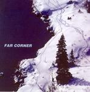

| Artist: | Far Corner |
| Title: | Far Corner |
| Label: | Cuneiform Rune 194 |
| Length(s): | 71 minutes |
| Year(s) of release: | 2004 |
| Month of review: | [06/2005] |
| 1) | Silly Whim | 4.54 |
| 2) | Going Somewhere? | 5.01 |
| 3) | Something Out There Part I | 6.48 |
| 4) | Something Out There Part II | 7.02 |
| 5) | Something Out There Part III | 3.27 |
| 6) | With One Swipe Of Its Mighty Paw | 7.40 |
| 7) | Outside | 5.25 |
| 8) | Tracking | 6.33 |
| 9) | The Turning | 7.39 |
| 10) | Fiction | 16.24 |
All samples of Far Corner appear here by permission of Cuneiform Records.
Going Somewhere? is a good question to ask, on this rather meandering piece in which piano and cello take the lead, with short interludes from a somewhat distorted guitar. Tension is what this type of music is often about, as well as a certain virtuosity. These elements are present, although I find the combination less gripping than on Kerman's 5UU's, Present and the aforementioned Univers Zero. What is certain is that the chamber rock like interludes can be quite frolic, and aren't just gloom and doom. The notion that the song is constructed out of many, short runs on piano, cello and guitar comes to mind quite often on this one.
Something Out There is a three parted piece, totalling over seventeen minutes. Something Out There Part I is the quiet opener, reminding me of some of the tasteful seventies ECM releases, with a strong presence of percussion, almost musique concrete like. On part II the Emerson organ comes in, combined with extremely pacey rhythms. The sound of the organ is close to that on Child In Time. There is a stronge sense of urgency, and it is totally unlike anything I have heard in this style. In fact, the tune reminds me of an avant-garde version of that track. The second part of the track seems to me somewhat improvised. It does include 'solo spots' for cello and bass, giving a bit of a VDG feel (the one without Generator). Something Out There Part III is the shortest one, and is a very sparse tune that does little for me.
With One Swipe Of Its Mighty Paw opens with rowdy cello and rhythm guitar, playing melodies that sound rather comical. Often, these songs depend on mood and not on melody and that is the case here, in which, suggested by the title, you see a large animal chasing something. All the instruments combine in their own fashion, and intermittently, to convey this notion. It does involve quite a bit of meandering though (the keyboard solo in the middle for instance).
Outside continues the line of music: a combination of fretless bass, light piano and mellow cello lines, punctuated by drums and some more heavy bass playing. Tracking is very classical sounding, but does have a pace to it. The structure is as always quite complex with many seemingly unrelated melodies that still latch on together. A bit like Tarzan moving through the jungle going from vine to vine. The middle part is brooding dominated by cello. The piano adds a dollar of tension as well, after which the guitar grinds loose. I really like the combination of tenseness and agressiveness. We end upliftingly.
The piano is the only factor on the intro for The Turning. After two minutes or so, the music breaks into something which has both classical and jazz aspects, and is quite pacey. The lightly dancing piano stays with us throughout, while the cello adds dark overtones.
The long Fiction closes this album. It opens forthwith, but takes a few steps back for a moody bass intermezzo, with plucked strungs from the cello. The song also features clarinet and flute and immediately the overall feel gets to be quite in the vein of Karda Estra. The two instruments form a welcome addition to the palette, even if they are used sparingly. Melodically this is the best track on the album. And with the changes in pace, there is not a boring moment. And don't we love it when that organ sets in again.